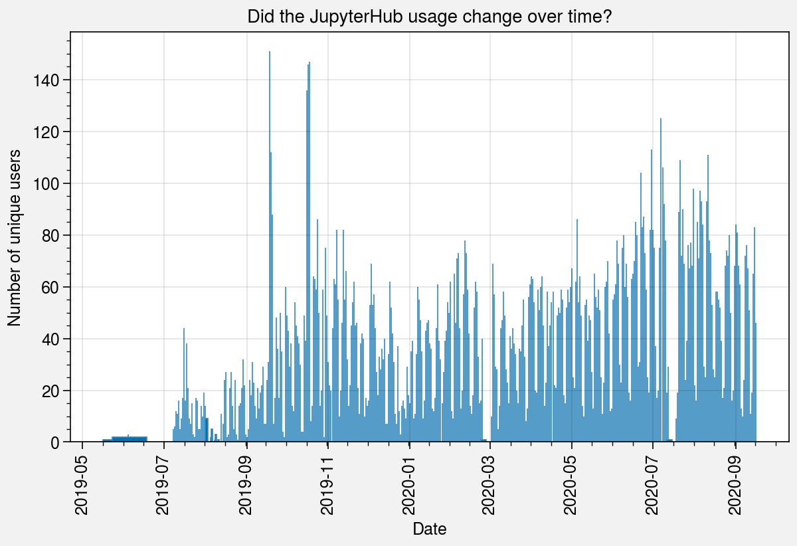

import pandas as pd
import proplot as plt
df = pd.read_csv(
"https://raw.githubusercontent.com/NCAR/jupyterhub-analysis/master/data/jhub_logs.csv.gz",
parse_dates=["session_start", "session_end"],
)
df.head()
| user | machine | session_start | session_end | log_file | |
|---|---|---|---|---|---|
| 0 | 20d8049712498ad1e232 | cheyenne | 2019-10-27 14:40:21 | 2019-10-27 16:40:40 | 9d18154b478a74b5048d |
| 1 | 20d8049712498ad1e232 | cheyenne | 2019-10-17 09:04:13 | 2019-10-17 11:04:20 | 3aebf8397c312169a649 |
| 2 | 20d8049712498ad1e232 | cheyenne | 2019-10-18 16:40:04 | 2019-10-18 16:42:08 | 0af27edd1d54f8f64735 |
| 3 | 20d8049712498ad1e232 | cheyenne | 2019-10-18 11:44:28 | 2019-10-18 12:18:35 | 044c2c11e5ebf6972a1d |
| 4 | 20d8049712498ad1e232 | cheyenne | 2019-10-17 15:42:48 | 2019-10-17 15:46:53 | 2055777649346c360841 |
data = df.groupby(df.session_start.dt.date).count()["user"]
data = data.sort_index(ascending=True)
data.head()
session_start
2019-05-21 1
2019-06-02 1
2019-06-03 2
2019-06-04 3
2019-06-05 2
Name: user, dtype: int64
fig, ax = plt.subplots(aspect=(3.5, 2), width=6)
ax.bar(data, edgecolor="#348ABD")
ax.format(
ylabel="Number of unique users",
xlabel="Date",
title="Did the JupyterHub usage change over time?",
)

import pymc3 as pm
You can find the C code in this temporary file: /var/folders/z7/sdhzbbr96bv2wjrsb92qsm3dwz5p3x/T/theano_compilation_error_xgnajrgt
---------------------------------------------------------------------------
ImportError Traceback (most recent call last)
~/opt/miniconda3/envs/playground/lib/python3.8/site-packages/theano/gof/lazylinker_c.py in <module>
75 if version != actual_version:
---> 76 raise ImportError(
77 "Version check of the existing lazylinker compiled file."
ImportError: Version check of the existing lazylinker compiled file. Looking for version 0.211, but found None. Extra debug information: force_compile=False, _need_reload=True
During handling of the above exception, another exception occurred:
ImportError Traceback (most recent call last)
~/opt/miniconda3/envs/playground/lib/python3.8/site-packages/theano/gof/lazylinker_c.py in <module>
98 if version != actual_version:
---> 99 raise ImportError(
100 "Version check of the existing lazylinker compiled file."
ImportError: Version check of the existing lazylinker compiled file. Looking for version 0.211, but found None. Extra debug information: force_compile=False, _need_reload=True
During handling of the above exception, another exception occurred:
Exception Traceback (most recent call last)
<ipython-input-5-2e5c536b7c65> in <module>
----> 1 import pymc3 as pm
~/opt/miniconda3/envs/playground/lib/python3.8/site-packages/pymc3/__init__.py in <module>
36
37
---> 38 __set_compiler_flags()
39
40 from .blocking import *
~/opt/miniconda3/envs/playground/lib/python3.8/site-packages/pymc3/__init__.py in __set_compiler_flags()
31 def __set_compiler_flags():
32 # Workarounds for Theano compiler problems on various platforms
---> 33 import theano
34 current = theano.config.gcc.cxxflags
35 theano.config.gcc.cxxflags = f"{current} -Wno-c++11-narrowing"
~/opt/miniconda3/envs/playground/lib/python3.8/site-packages/theano/__init__.py in <module>
108 object2, utils)
109
--> 110 from theano.compile import (
111 SymbolicInput, In,
112 SymbolicOutput, Out,
~/opt/miniconda3/envs/playground/lib/python3.8/site-packages/theano/compile/__init__.py in <module>
10 from theano.compile.function_module import *
11
---> 12 from theano.compile.mode import *
13
14 from theano.compile.io import *
~/opt/miniconda3/envs/playground/lib/python3.8/site-packages/theano/compile/mode.py in <module>
9 import theano
10 from theano import gof
---> 11 import theano.gof.vm
12 from theano import config
13 from six import string_types
~/opt/miniconda3/envs/playground/lib/python3.8/site-packages/theano/gof/vm.py in <module>
672 if not theano.config.cxx:
673 raise theano.gof.cmodule.MissingGXX('lazylinker will not be imported if theano.config.cxx is not set.')
--> 674 from . import lazylinker_c
675
676 class CVM(lazylinker_c.CLazyLinker, VM):
~/opt/miniconda3/envs/playground/lib/python3.8/site-packages/theano/gof/lazylinker_c.py in <module>
137
138 args = cmodule.GCC_compiler.compile_args()
--> 139 cmodule.GCC_compiler.compile_str(dirname, code, location=loc,
140 preargs=args)
141 # Save version into the __init__.py file.
~/opt/miniconda3/envs/playground/lib/python3.8/site-packages/theano/gof/cmodule.py in compile_str(module_name, src_code, location, include_dirs, lib_dirs, libs, preargs, py_module, hide_symbols)
2408 # prints the exception, having '\n' in the text makes it more
2409 # difficult to read.
-> 2410 raise Exception('Compilation failed (return status=%s): %s' %
2411 (status, compile_stderr.replace('\n', '. ')))
2412 elif config.cmodule.compilation_warning and compile_stderr:
Exception: Compilation failed (return status=1): In file included from /Users/abanihi/.theano/compiledir_macOS-10.15.7-x86_64-i386-64bit-i386-3.8.5-64/lazylinker_ext/mod.cpp:1:. In file included from /Users/abanihi/opt/miniconda3/envs/playground/include/python3.8/Python.h:25:. /Users/abanihi/opt/miniconda3/envs/playground/bin/../include/c++/v1/stdio.h:107:15: fatal error: 'stdio.h' file not found. #include_next <stdio.h>. ^~~~~~~~~. 1 error generated..
import theano
You can find the C code in this temporary file: /var/folders/z7/sdhzbbr96bv2wjrsb92qsm3dwz5p3x/T/theano_compilation_error_ui43aox8
-----------------------------------------------
ImportError Traceback (most recent call last)
~/opt/miniconda3/envs/playground/lib/python3.8/site-packages/theano/gof/lazylinker_c.py in <module>
75 if version != actual_version:
---> 76 raise ImportError(
77 "Version check of the existing lazylinker compiled file."
ImportError: Version check of the existing lazylinker compiled file. Looking for version 0.211, but found None. Extra debug information: force_compile=False, _need_reload=True
During handling of the above exception, another exception occurred:
ImportError Traceback (most recent call last)
~/opt/miniconda3/envs/playground/lib/python3.8/site-packages/theano/gof/lazylinker_c.py in <module>
98 if version != actual_version:
---> 99 raise ImportError(
100 "Version check of the existing lazylinker compiled file."
ImportError: Version check of the existing lazylinker compiled file. Looking for version 0.211, but found None. Extra debug information: force_compile=False, _need_reload=True
During handling of the above exception, another exception occurred:
Exception Traceback (most recent call last)
~/opt/miniconda3/envs/playground/lib/python3.8/site-packages/theano/gof/vm.py in <module>
673 raise theano.gof.cmodule.MissingGXX('lazylinker will not be imported if theano.config.cxx is not set.')
--> 674 from . import lazylinker_c
675
~/opt/miniconda3/envs/playground/lib/python3.8/site-packages/theano/gof/lazylinker_c.py in <module>
138 args = cmodule.GCC_compiler.compile_args()
--> 139 cmodule.GCC_compiler.compile_str(dirname, code, location=loc,
140 preargs=args)
~/opt/miniconda3/envs/playground/lib/python3.8/site-packages/theano/gof/cmodule.py in compile_str(module_name, src_code, location, include_dirs, lib_dirs, libs, preargs, py_module, hide_symbols)
2409 # difficult to read.
-> 2410 raise Exception('Compilation failed (return status=%s): %s' %
2411 (status, compile_stderr.replace('\n', '. ')))
Exception: Compilation failed (return status=1): In file included from /Users/abanihi/.theano/compiledir_macOS-10.15.7-x86_64-i386-64bit-i386-3.8.5-64/lazylinker_ext/mod.cpp:1:. In file included from /Users/abanihi/opt/miniconda3/envs/playground/include/python3.8/Python.h:25:. /Users/abanihi/opt/miniconda3/envs/playground/bin/../include/c++/v1/stdio.h:107:15: fatal error: 'stdio.h' file not found. #include_next <stdio.h>. ^~~~~~~~~. 1 error generated..
During handling of the above exception, another exception occurred:
AttributeErrorTraceback (most recent call last)
<ipython-input-6-e2d3ee711e72> in <module>
----> 1 import theano
~/opt/miniconda3/envs/playground/lib/python3.8/site-packages/theano/__init__.py in <module>
108 object2, utils)
109
--> 110 from theano.compile import (
111 SymbolicInput, In,
112 SymbolicOutput, Out,
~/opt/miniconda3/envs/playground/lib/python3.8/site-packages/theano/compile/__init__.py in <module>
10 from theano.compile.function_module import *
11
---> 12 from theano.compile.mode import *
13
14 from theano.compile.io import *
~/opt/miniconda3/envs/playground/lib/python3.8/site-packages/theano/compile/mode.py in <module>
9 import theano
10 from theano import gof
---> 11 import theano.gof.vm
12 from theano import config
13 from six import string_types
~/opt/miniconda3/envs/playground/lib/python3.8/site-packages/theano/gof/vm.py in <module>
681 except ImportError:
682 pass
--> 683 except (OSError, theano.gof.cmodule.MissingGXX) as e:
684 # OSError happens when g++ is not installed. In that case, we
685 # already changed the default linker to something else then CVM.
AttributeError: partially initialized module 'theano' has no attribute 'gof' (most likely due to a circular import)